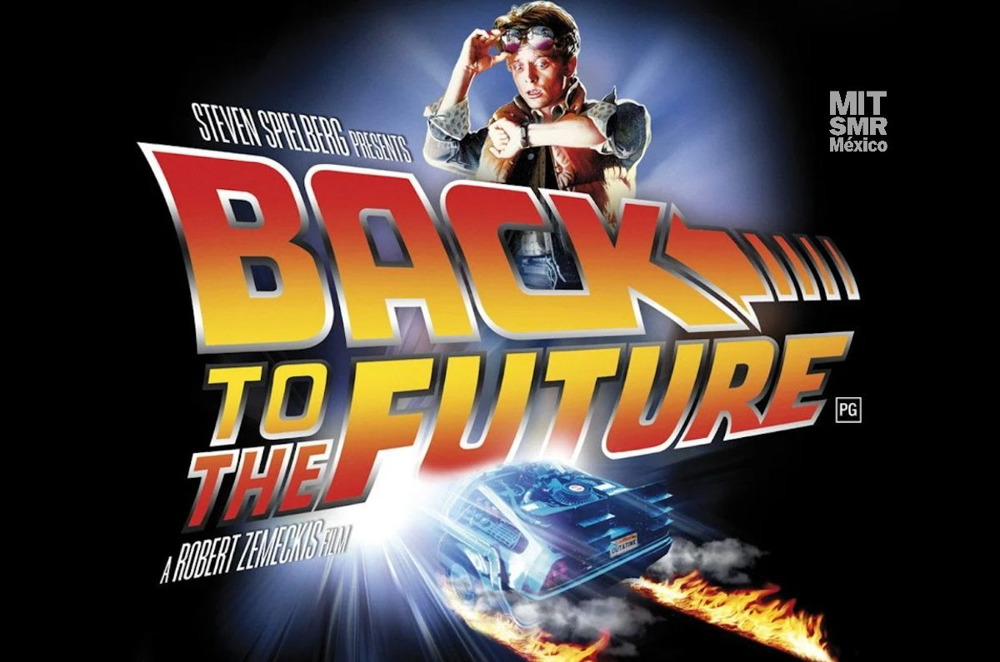
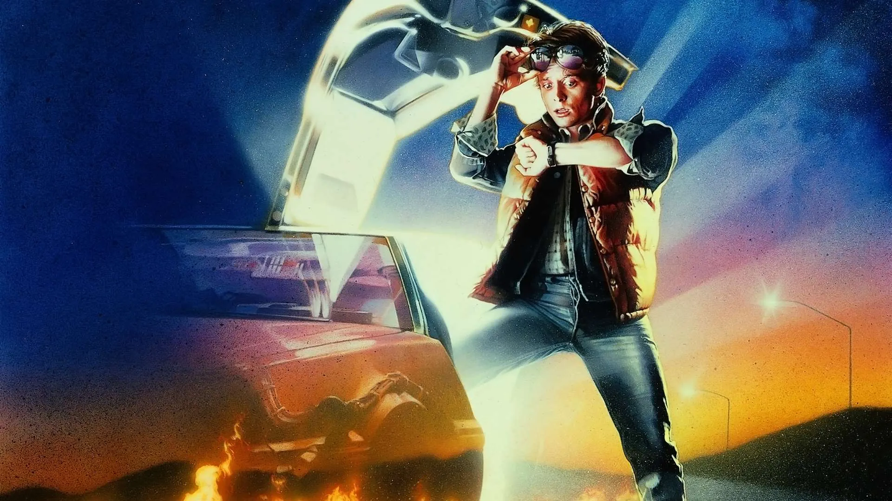
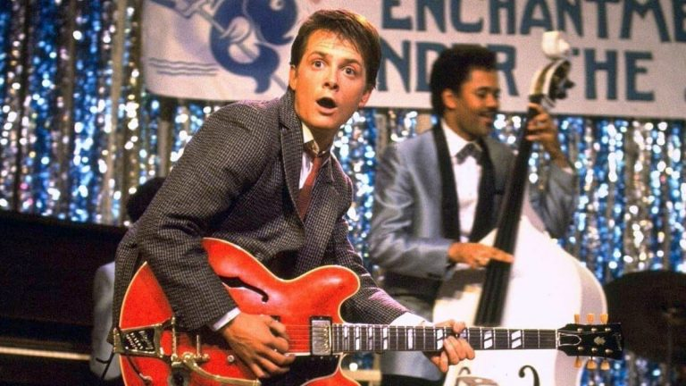
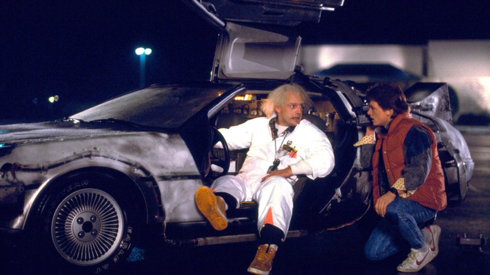

- 
- 

- 
- 
Marty McFly, un adolescente de Hill Valley, viaja accidentalmente al año 1955 en un
DeLorean modificado por el excéntrico científico Dr. Emmett Brown. Atrapado en el pasado, Marty se encuentra
con sus jóvenes padres y, sin querer, interfiere con su historia de amor, poniendo en riesgo su propia existencia.
Con la ayuda del Doc Brown de 1955, Marty debe asegurarse de que sus padres se enamoren mientras busca la manera de
regresar al futuro antes de que sea demasiado tarde.